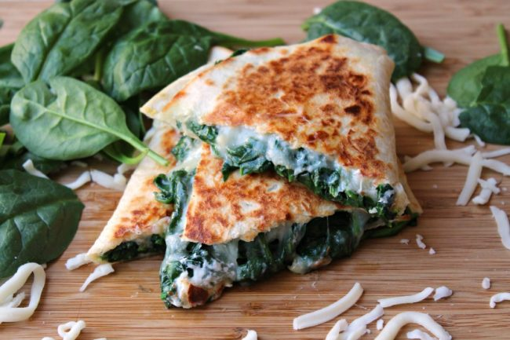

Spinach Quesadilla

Vegetable Quesadilla
A superior quesadilla that will leave your mouth watering
Who would of thought that spinach would go good in a quesadilla? No meat? Yet it's delicious!
Ingredients
- Large flour torillas
- 100g Fresh spinach
- Mozarella cheese
- Cream
Steps
- Cook spinach with cream and mozarella cheese until it's watery
- Put torilla on frying pan or grilla pan on medium heat
- Put spinach on one side of the circular flour torilla. Don't let it overflowover the edges
- Sprinkle some mozarella cheese on the half side of the circular tortilla
- fold torilla in half so it looks like a half moon
- flip torilla on other side when on side is cooked
- Cut the half moon shaped quesadilla into 4 pieces like a pizza